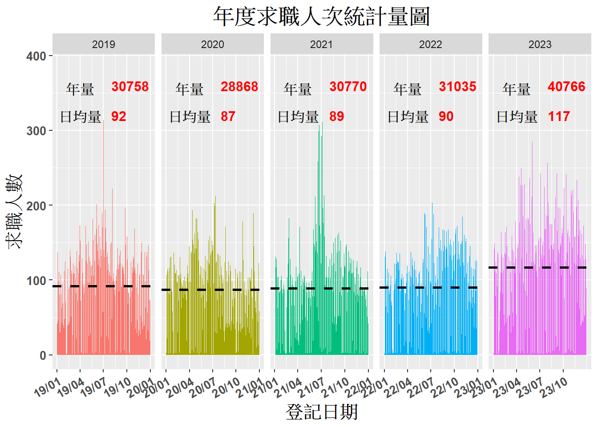
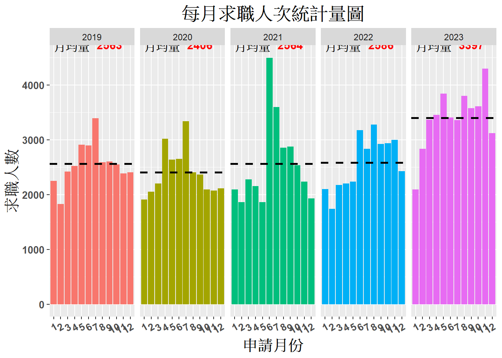
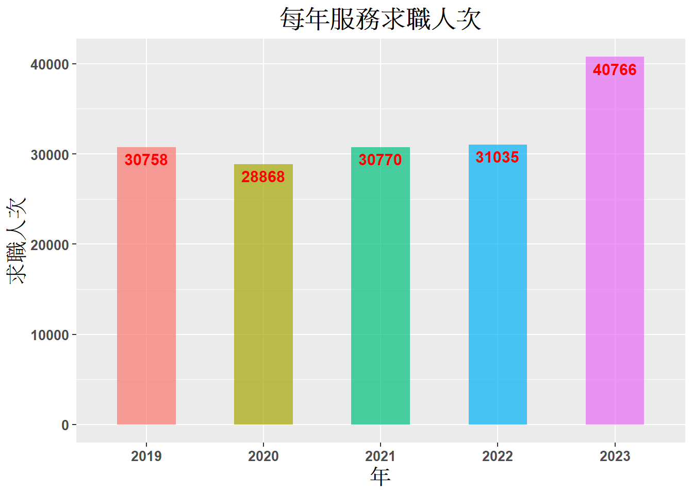

5 服務能量(求職人次與人數–因為1人可能來多次)
#3.1 服務能量(求職人次與人數--因為1人可能來多次)---------
#load("F:/提供主計處資料/X5y.RData")
# 每日處理件數
datebreaks <- seq(as.Date("2019-01-01"), as.Date("2023-12-31"),
by = "3 month")
dailycase <- X5y %>%
group_by(登記日期1,年,月,日,星期) %>%
summarise(count=n()) ## `summarise()` has grouped output by '登記日期1', '年', '月', '日'. You can
## override using the `.groups` argument. # 計算日均與月總
d <- dailycase %>% group_by(年) %>% #計算日處理量
summarise(每年總量=sum(count), 日數=n()) %>%
mutate(日平均量=round(每年總量/日數,0))
pc <- ggplot(dailycase, aes(x=登記日期1, y= count,fill=年)) +
geom_area(show.legend = F) + facet_grid(.~年, scales = "free_x")+ scale_x_date(breaks = datebreaks,date_labels = "%y/%m") +
theme(axis.text.x = element_text(angle = 30, hjust = 1))+
labs(title = "年度求職人次統計量圖", x="登記日期",y="求職人數", color="年")+
theme(legend.position = "top")+ #主題樣式與legend位置
theme(axis.text = element_text(face="bold",size = 10, angle = 0, vjust = 0.5, hjust = 0.5), #xy-axis label size..
axis.title = element_text(face="bold",size = 15,hjust = 0.5), #xy-axis title size
plot.title = element_text(face="bold",size = 18,hjust = 0.5), plot.subtitle = element_text(face="bold",size = 14,hjust = 0.5,margin = margin(t = 20)), legend.title = element_text(color="black", size=15, face="bold", hjust = 1.0),
legend.text = element_text(size=15))
# 加入平均值與線及文字
pc <- pc+ geom_hline(data = d, aes(yintercept = 日平均量),
linetype = "dashed",size =1)+
# 每天平均處理量
geom_text(data = d, aes(y=313, x=ymd(c("2019/04/01","2020/04/01","2021/04/01","2022/04/01","2023/04/01")),
label = "日均量"),vjust =0, fontface="bold", size=4) +
geom_text(data = d, aes(y=320,x = ymd(c("2019/08/01","2020/08/01","2021/08/01","2022/08/01","2023/08/01")), label = 日平均量),hjust =0, fontface="bold", size=4,color="red") +
# 每月處理量
geom_text(data = d, aes(y=350,x =ymd(c("2019/04/01","2020/04/01","2021/04/01", "2022/04/01","2023/04/01")), label = "年量"), vjust =0, fontface="bold", size=4)+
geom_text(data = d, aes(y=360,x = ymd(c("2019/08/01","2020/08/01","2021/08/01","2022/08/01","2023/08/01")), label = 每年總量), hjust =0, fontface="bold", size=4,color="red") ## Warning: Using `size` aesthetic for lines was deprecated in ggplot2 3.4.0.
## ℹ Please use `linewidth` instead.
## This warning is displayed once every 8 hours.
## Call `lifecycle::last_lifecycle_warnings()` to see where this warning was
## generated.## Warning: `show.legend` must be a logical vector.
## `summarise()` has grouped output by '年'. You can override using the `.groups`
## argument. #計算月處理量
m <- monthlycase %>% group_by(年) %>%
summarise(每年總量=sum(count), 月數=n()) %>%
mutate(月平均量=round(每年總量/月數,0))
pd <- ggplot(monthlycase, aes(x=月, y= count, fill=年)) +
geom_col(position = "dodge",show.legend = F)+
theme(axis.text.x = element_text(angle = 30, hjust = 1))+
labs(title = "每月求職人次統計量圖", x="申請月份",y="求職人數")+
facet_grid(.~年)+
scale_x_discrete(limits = c("1", "2", "3","4","5","6","7","8","9","10","11","12"))+
theme(axis.text = element_text(face="bold",size = 10, angle = 0, vjust = 0.5, hjust = 0.5), #xy-axis label size..
axis.title = element_text(face="bold",size = 15,hjust = 0.5), #xy-axis title size
plot.title = element_text(face="bold",size = 18,hjust = 0.5), # 標題大小
plot.subtitle = element_text(face="bold",size = 14,hjust = 0.5,margin = margin(t = 20))) # 標題大小
pd <- pd+ geom_hline(data=m,aes(yintercept = 月平均量),linetype = "dashed",size =1, color="black" )+
geom_text(data=m, aes(x=9,y = 4500,label = 月平均量),
vjust =-1, fontface="bold", size=4,color="red")+ # 加上數字標籤
geom_text(data=m, aes(x=1,y = 4400,label = "月均量"),
vjust =-1.5,hjust=0, fontface="bold", size=4) # 加上數字標籤
pd## Warning: `show.legend` must be a logical vector.
#plot_grid(pd, labels=c("圖 D"))
# 每年處理件數(可略)
yearlycase <- monthlycase %>% group_by(年) %>%
summarise(count=sum(count))
pe <- ggplot(yearlycase, aes(x=年, y= count, fill=年)) +
geom_col(position = "dodge",width = 0.5, show.legend = F, alpha=0.7)+
#theme(axis.text.x = element_text(angle = 30, hjust = 1))+
labs(title = "每年服務求職人次", x="年",y="求職人次")+
theme(axis.text = element_text(face="bold",size = 10, angle = 0, vjust = 0.5, hjust = 0.5), #xy-axis label size..
axis.title = element_text(face="bold",size = 15,hjust = 0.5), #xy-axis title size
plot.title = element_text(face="bold",size = 18,hjust = 0.5), # 標題大小
plot.subtitle = element_text(face="bold",size = 14,hjust = 0.5,margin = margin(t = 20)))# 標題大小
pe <- pe + geom_text(aes(label = count), vjust = 1.5,
fontface="bold",size=4,color="red") # 加上數字標籤
pe## Warning: `show.legend` must be a logical vector.